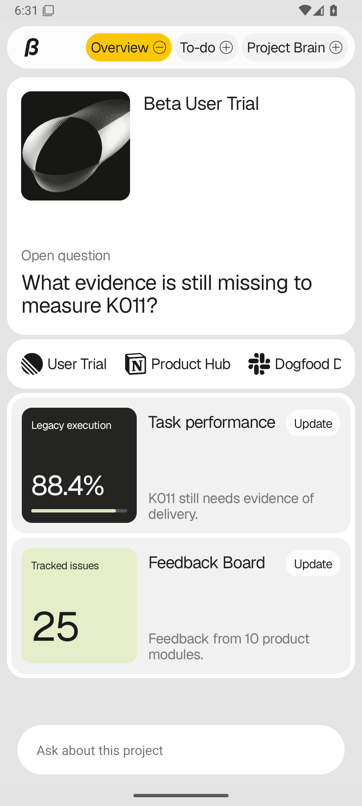
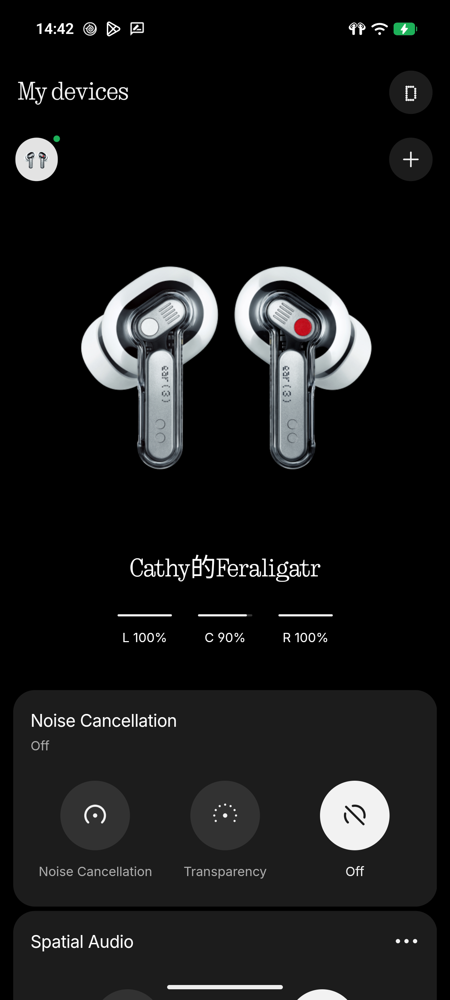

PROJECT
Beta User Triallocal/project-agent-trialBRANCH-BACKED PROTOTYPES
Come to play with Ditto.
Your living prototype awaits.
Explore captured Android flows directly in your browser.
No APK, ADB or local emulator required.
SCROLL TO EXPLORE↓
Project Builds
Open a portable interaction graph captured from the original Android build.

